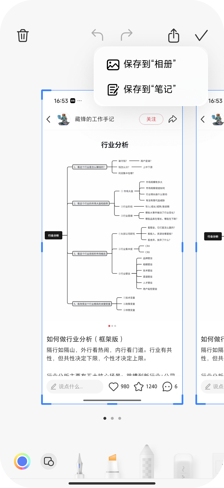
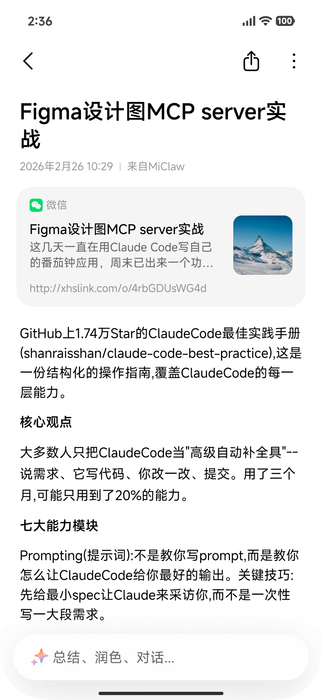
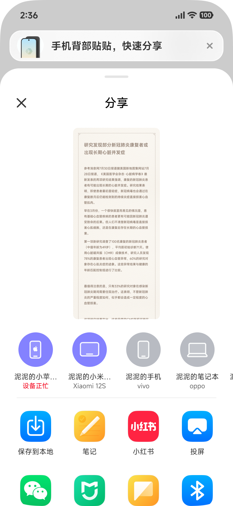
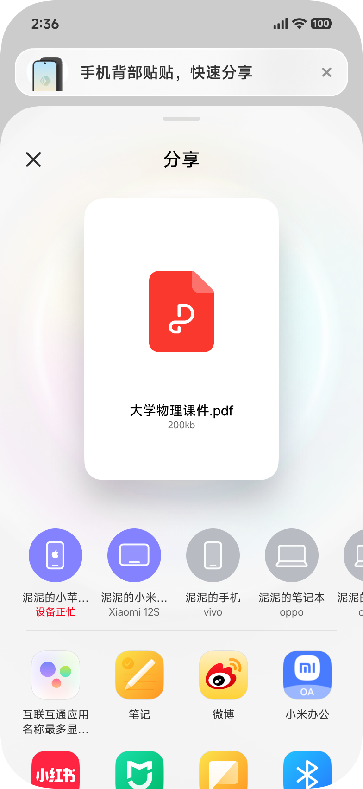
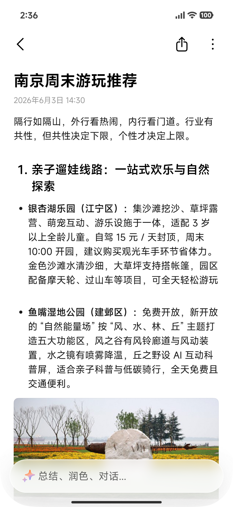
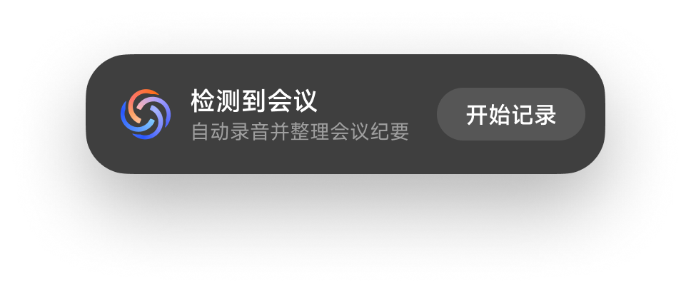
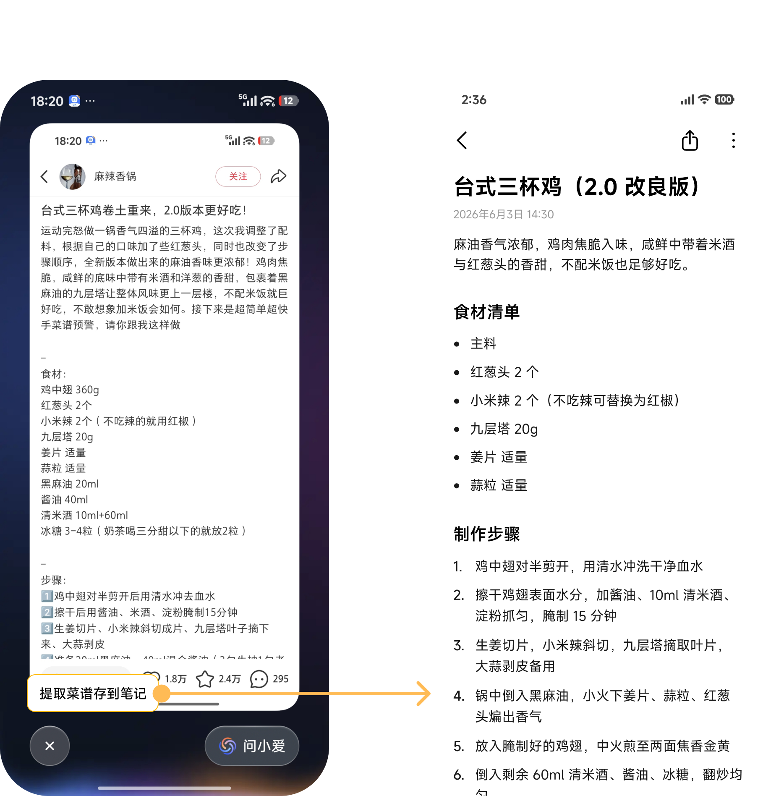
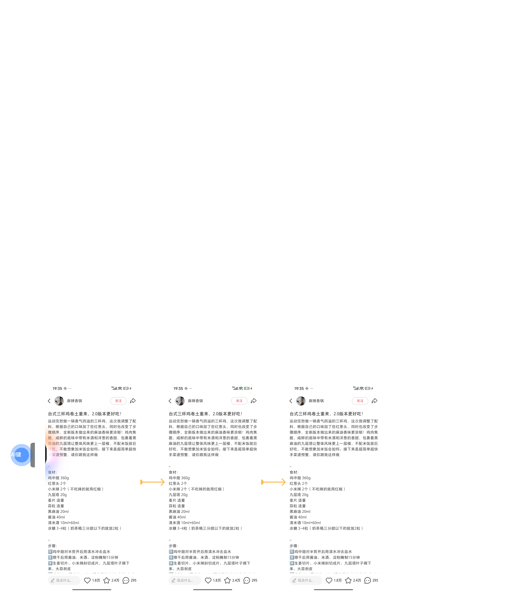
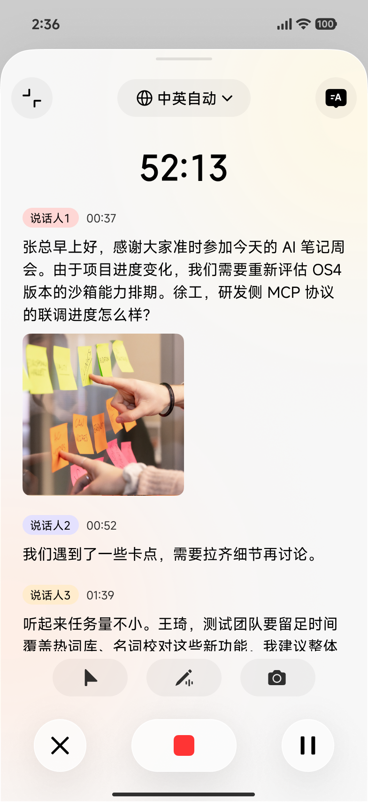

A1 AI 识屏 → 存到笔记
基于场景语义判定存入内容，图文 / 链接 / 视频要点都可一键存入笔记
① 想记就记下：该记的时候不用惦记（系统帮起头）、看到的顺手存进来，不打断手头的事
② 记进来是对的：人名、术语别听错记错，过后自己看得懂
③ 以后真用得上：存对、建好索引，以后找得回、对得上出处






| 用户场景 | 用户需求 | 用户 query | 抓取的主内容 | 生成结构 |
|---|---|---|---|---|
| 📄 阅读长文/文档 | 想留这段以后翻 | "存这段" / "存这段到笔记" | 当前屏文字 + 补齐段落 | 首行做标题 · 正文保真 · 引用出处 |
| 🖼 想留的图 | 设计参考 / 图表 / 示意图，留作素材，可能加批注 | "把这张图存到笔记" | 图 + ocr 文本 | 标题 · 图 · 结构化正文（按需展示）· 引用出处 |
| 📷 刷图文帖 | 想留完整的一份 | "存下这个菜谱" / "把攻略存下" | 多图 + 文字一起抓 | 标题 · 结构化正文 · 图按顺序穿插 · 引用出处 |
| 🎞 长视频 | 不想看，只想知道讲了什么 | "总结这个视频到笔记" | 完整字幕 + 元数据 | 标题 · 原链接 · AI 摘要 · 要点 · 章节 |
| 🔗 文章链接 | 想留内容以后回看 | "存这篇文章到笔记" | 解析正文 + URL | 标题 · 原链接 · 正文 |
· 来源元数据（系统底层）：每条笔记都默认记，包括从哪个 app 存的、什么时间、什么方式触发。用于溯源、去重、召回，用户界面上不主动展示
· 原链接信息（前台展示）：内容是从一个网址解析出来的（视频、文章链接、图文帖），把网址、站点、标题、摘要合成一张网址卡，放在正文最上方，用户能点跳原网页



| 索引名称 | 描述 | 支持情况 |
|---|---|---|
| 笔记正文 | 笔记正文语义理解 例："我血糖怎么样" → 命中"体检报告" | 已支持 |
| 子笔记正文 | 待办/日程/思维导图中的文字内容 例："下周要交什么"→ 命中待办卡片里的"周五前交竞品分析文档" | 本期支持 |
| 图片 | 图片中的文字 例："装修公司电话多少"→ 命中拍的名片照片 | 本期支持 |
| 音频 | 音频原文及总结 例："上次开会谁负责对接"→ 命中会议录音的转写文稿 | 本期支持 |
| 文档 | 文档原文 例："合同里违约金怎么算"→ 命中导入的 PDF 合同内容 | 本期支持 |
| AI 对话记录 | AI 对话问答原文 例："AI 之前帮我翻译的那段英文邮件"→ 命中对话中生成的翻译内容 | 本期支持 |
| 指标 | 看什么 | 用途 |
|---|---|---|
| 各入口的记入分布 | 语音/截图/分享/长按/悬浮球各带进来多少条 | 看入口铺得对不对（A1–A4） |
| 自动帮记的采纳率 | 提示被点的比例 | 过低说明时机不对或判断不准（A5、A6） |
| 忽略后的打扰感 | 连续忽略次数、关闭开关比例 | 守住"判断错了不伤人"（A5、A6） |
| 名字与术语的纠正率 | 自动对齐后被改回的比例 | 过高说明对错了，宁可不对齐（B1） |
| 存入到可搜的时延 | 记完多久能被搜到 | 验证"存完立刻能搜到"（C1） |
🛡 边界
· 和记忆的分工：临时记的一句话、顺手截的碎片天然和小爱记忆重叠——哪些归笔记、哪些归记忆
· 通话录音归属：属"记不过来"场景，但系统自动记入，算笔记的记还是通话侧承接
· 截图 / 圈选进来的判断：值不值得成一篇由谁定、轻建议怎么给才不打扰
· 自动帮记的发起权：归笔记自己发起，还是系统 / 小爱派给笔记
· 准确的引擎依赖：听对、说话人识别的根子在语音引擎，需与算法侧对齐能做到哪